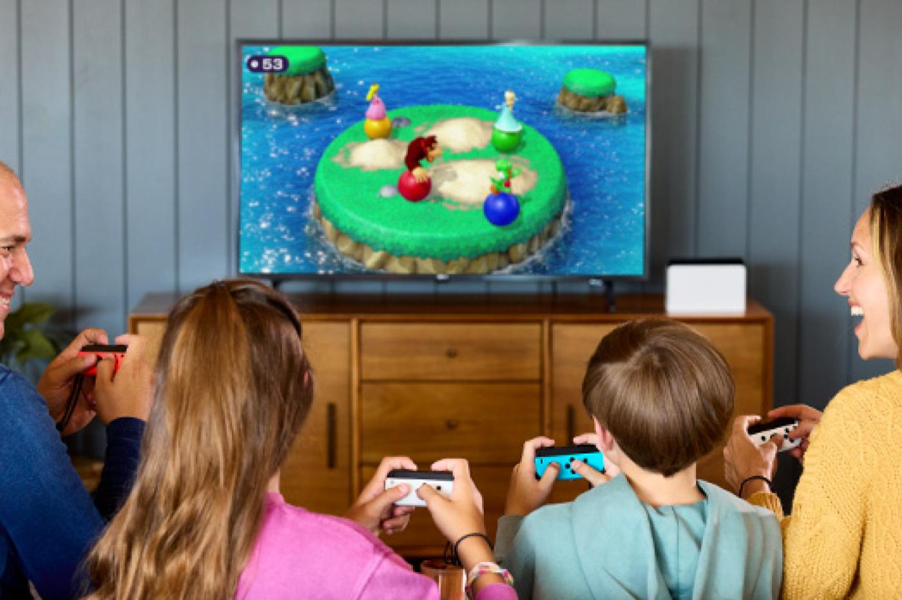
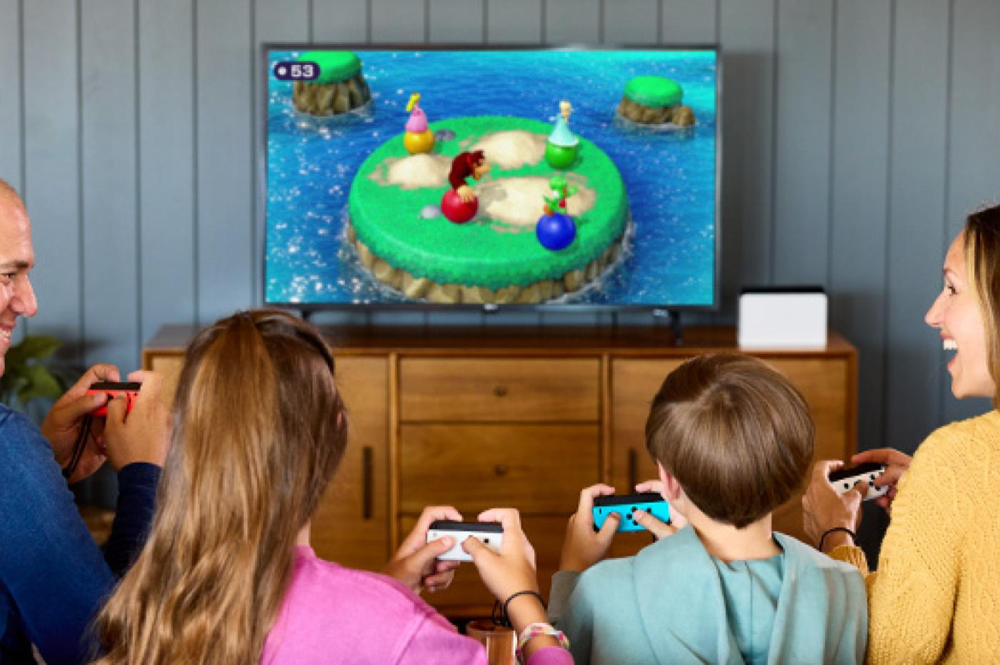

La nintendo Switch est une console qui s'éloigne des autres types de console en optant pour un format familial.
Elle est accompagnée d'un kit de plusieurs manettes permettant de jouer avec ses amis ou famille.
Faisant partie de la liscence Nintendo, tous les meilleurs jeux comme Mario ou même Wii sport permettent de passer un bon moment.
 

Cette console est réputée pour être la plus movible et la plus manipulable du marché.
En effet, elle peut très bien rester attachée à son socle pour y jouer sur sa télé,
et peut également être portée et y jouer n'importe grâce à son écran détachable.
Les mannettes sont directement attachées à la console, donc pas de souci de rangement !
Les Joycons sont l'emblème phare de la nintendo switch.
Ils peuvent être tenus à la verticale, horizontale et même mis dans un volant.
Ils suivent donc les traces des manettes Wii mais avec un format plus petit pour un transport plus simple.